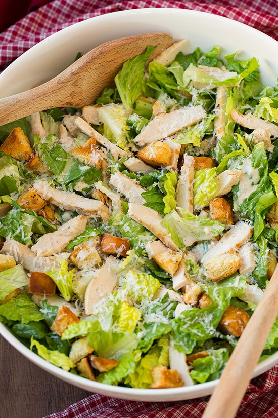

Chicken Caeser Salad

Cool crisp romaine lettuce, creamy dressing, juicy tender chicken and savoury cheese are
what make Chicken Caeser Salad a tasteful dish. Proven to stand the test of times, Chicken
Caeser Salad is a classic plate that must be a part of everyone's recipe book.
Ingredients
Dressing
- 1/2 cup fat free plain Greek yogurt
- 3 anchovy fillets (about 2 tsp once mashed)
- 1 1/2 Tbsp olive oil
- 1 1/2 Tbsp full fat mayonnaise
- 2 Tbsp fresh lemon juice
- 1 1/2 tsp dijon mustard
- 1 Tbsp Worcestershire sauce
- 1/2 tsp freshly ground black pepper
- Salt to taste
- 2 small cloves garlic , pressed through a garlic crusher
Croutons
- 1/2 (16 oz) loaf French bread, 2 days old
- 3 Tbsp olive oil
- 1 large clove garlic , pressed through a garlic crusher
- 1/4 each salt and freshly ground black pepper
Salad
- 1 lb chicken boneless skinless breasts , grilled and sliced (rotisserie chicken would work too)
- 1 large head Romaine lettuce , chopped into bite size pieces
- 1/2 cup finely shredded parmesan cheese (about 2 oz)
Instructions
For the dressing:
- Remove larger bones from anchovy fillets.
- Place fillets into bowl and mash with back of a spoon.
- Add in mayonnaise, olive oil, lemon juice, mustard, Worcestershire sauce, pepper salt and garlic and stir until well blended.
- Whisk in Greek yogurt.
- Chill in refrigerator while preparing remainder.
For the croutons:
- Preheat oven to 375 degrees.
- Cut bread into slices 1/2-inch t0 3/4-inch thick then cut each slice into cubes.
- Spread bread cubes into an even layer on a baking sheet and bake 5 minutes.
- Meanwhile, in a mixing bowl, whisk together olive oil, garlic, salt and pepper.
- Remove from oven and move bread cubes closer to center of pan (so they're more side by side), then slowly and evenly drizzle with half of the olive oil mixture and toss.
- Drizzle with remaining olive oil mixture and toss, then bake 5 - 6 minutes.
- Remove from oven and toss, then bake 5 - 6 minutes longer or until golden brown and crisp. Remove from oven and allow to cool to room temperature.
Coming all together
- In a large salad bowl toss together lettuce, chicken, croutons and half of the parmesan.
- Drizzle with desired amount of dressing and toss.
- Plate and sprinkle each portion with remaining parmesan. Serve immediately.